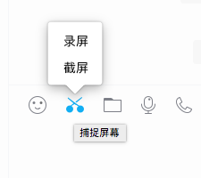

北京将适时出台考试招生制度改革实施方案
2014年09月04日11:52
腾讯数码讯（汪洋）北京时间8月29日凌晨，苹果公司正式对外发出了邀请函，定于太平洋时间9月9日上午10点，北京时间9月10日凌晨1点正式在美国举办新品发布会。从iPhone6的曝光频率来看，它无疑将成为本次新品发布会的主角。然而就在发布会前夕，我们又看到国内运营商开始集体曝光iPhone 6的消息，表示出了对于这款升级产品的极大热情。
北京移动率先出击：两款iPhone提前接受预定
北京时间9月1日消息，中国移动北京分公司的iPhone 6预订页面曝光（http://www.bj.10086.cn/mobile/iphone6/index.html），官方的预定规则显示，通过页面预订iPhone 6的用户，可以获得iPhone 6移动版的优先购买权，同时限定每个手机号只能预订一部iPhone 6。而在预订页面中，4.7英寸和5.5英寸的iPhone 6赫然在列，尽管在页面上官方没有做出的过多解释，但是很明显中国移动已经默认此次会有两个不同屏幕尺寸的iPhone 6发布。至截稿时，已经有2730名用户成功进行预约，移动承诺在iPhone 6上市之后按照预订的先后顺序办理购买。
联通版本价格曝光：4.7英寸5288元，5.5英寸6288元
